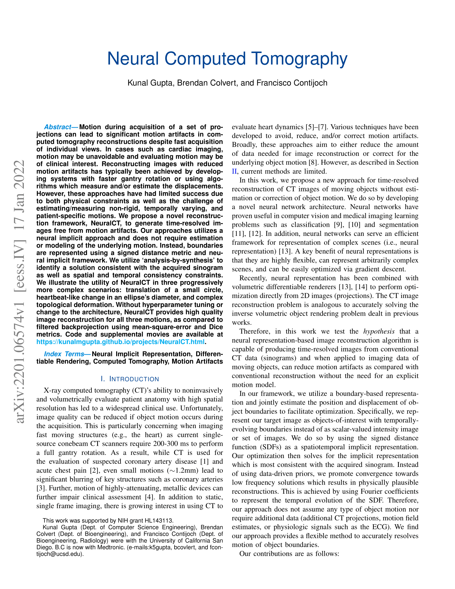

|
|
|
|
|
|
|
Motion during acquisition of a set of projections can lead to significant motion artifacts in computed tomography reconstructions despite fast acquisition of individual views. In cases such as cardiac imaging, motion may be unavoidable and evaluating motion may be of clinical interest. Reconstructing images with reduced motion artifacts has typically been achieved by developing systems with faster gantry rotation or using algorithms which measure and/or estimate the displacements. However, these approaches have had limited success due to both physical constraints as well as the challenge of estimating/measuring non-rigid, temporally varying, and patient-specific motions. We propose a novel reconstruction framework, NeuralCT, to generate time-resolved images free from motion artifacts. Our approaches utilizes a neural implicit approach and does not require estimation or modeling of the underlying motion. Instead, boundaries are represented using a signed distance metric and neural implicit framework. We utilize 'analysis-by-synthesis' to identify a solution consistent with the acquired sinogram as well as spatial and temporal consistency constraints. We illustrate the utility of NeuralCT in three progressively more complex scenarios: translation of a small circle, heartbeat-like change in an ellipse's diameter, and complex topological deformation. Without hyperparameter tuning or change to the architecture, NeuralCT provides high quality image reconstruction for all three motions, as compared to filtered backprojection using mean-square-error and Dice metrics.
|  | @misc{gupta2022neural, title={Neural Computed Tomography}, author={Kunal Gupta and Brendan Colvert and Francisco Contijoch}, year={2022}, eprint={2201.06574}, archivePrefix={arXiv}, primaryClass={eess.IV} } |
We thank Zhennong Chen for comments and insightful discussion regarding the manuscript. This work was supported by NIH grant HL143113
[1] Mildenhall, Ben, et al. "Nerf: Representing scenes as neural radiance fields for view synthesis." European conference on computer vision. Springer, Cham, 2020.
[2] Contijoch, Francisco, J. Webster Stayman, and Elliot R. McVeigh. "The impact of small motion on the visualization of coronary vessels and lesions in cardiac CT: a simulation study." Medical physics 44.7 (2017): 3512-3524.
[3] Sitzmann, Vincent, et al. "Implicit neural representations with periodic activation functions." arXiv preprint arXiv:2006.09661 (2020).
Contact: Kunal Gupta
Template stolen from Georgia Gkioxari